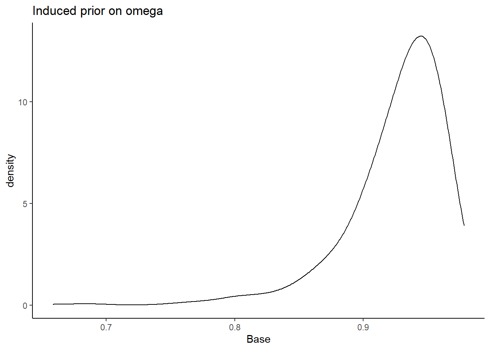
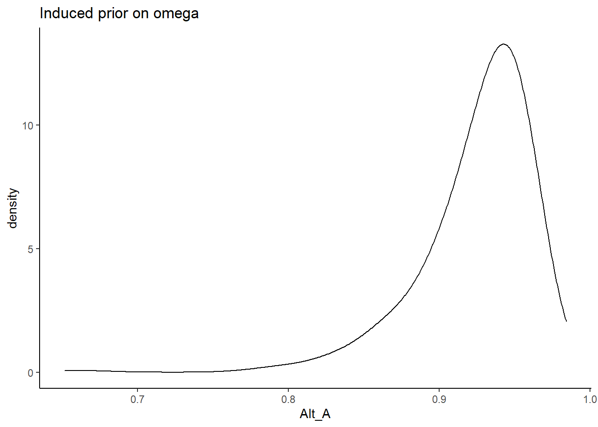
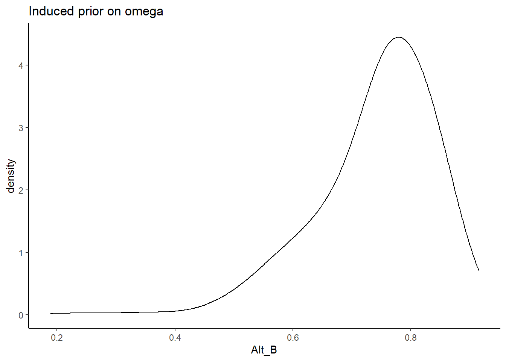
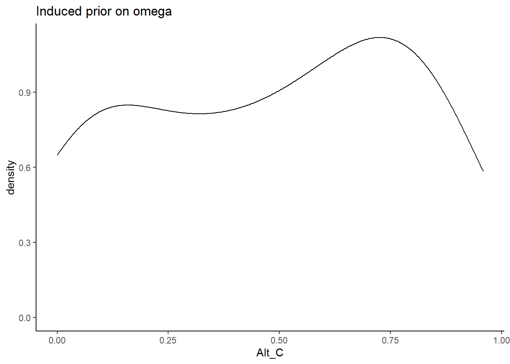
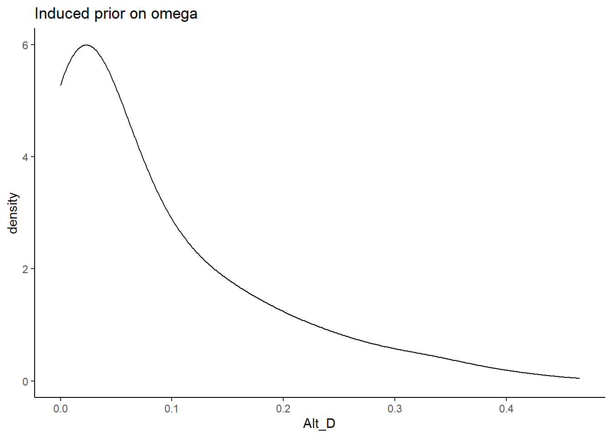
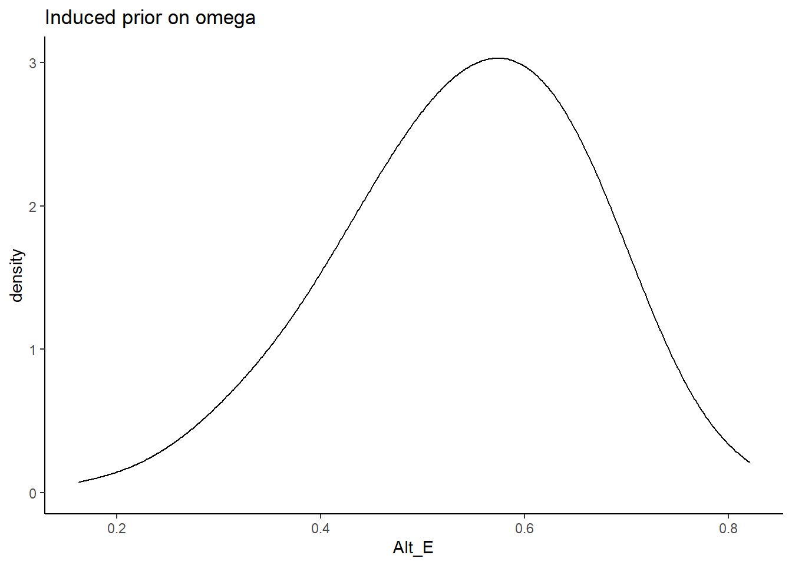
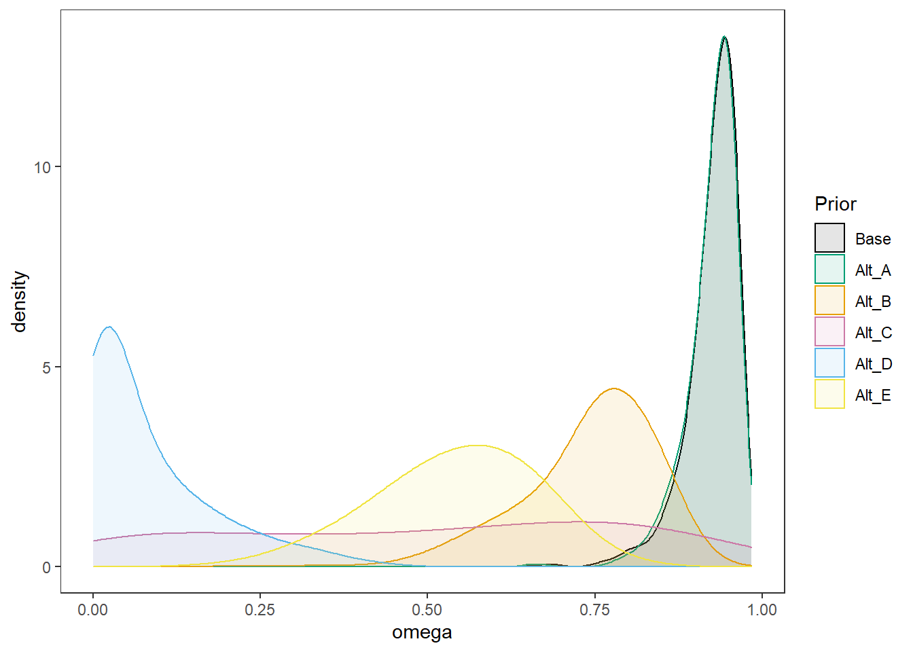
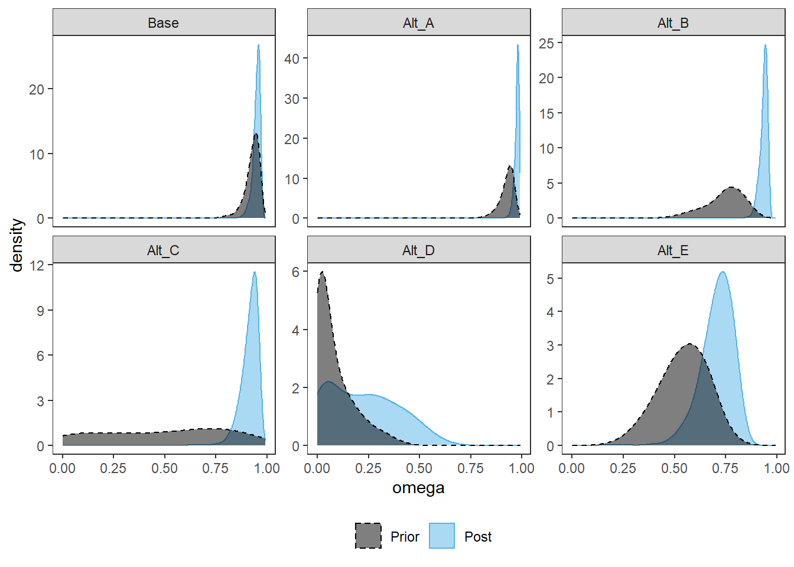
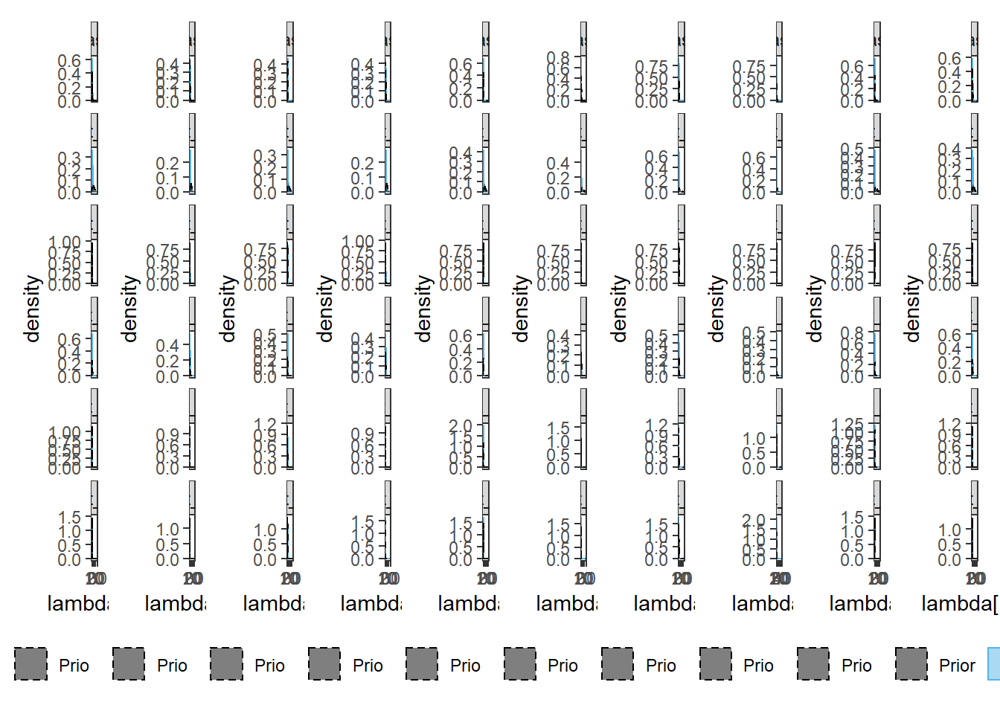
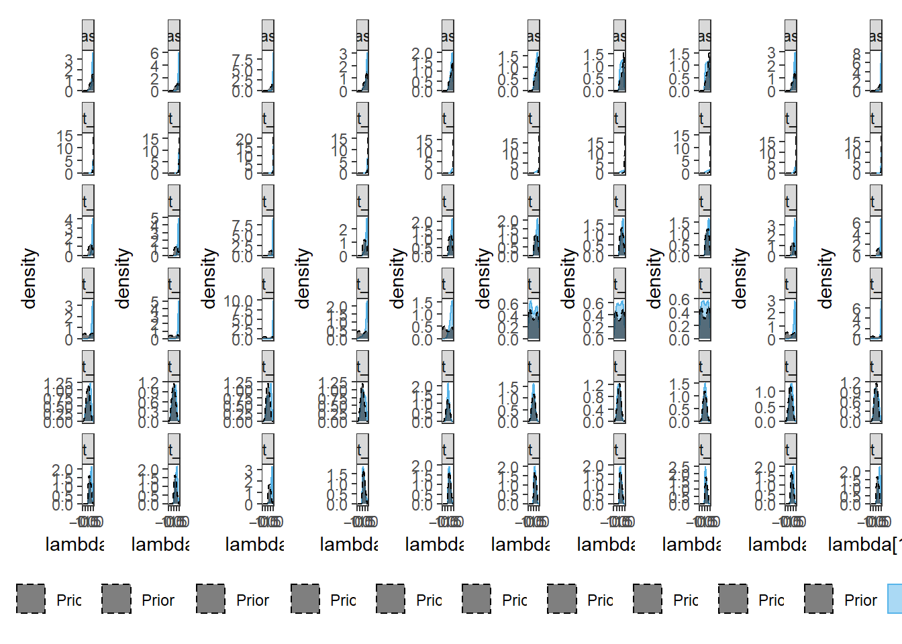

Last updated: 2022-01-18
Checks: 4 2
Knit directory: Padgett-Dissertation/
This reproducible R Markdown analysis was created with workflowr (version 1.6.2). The Checks tab describes the reproducibility checks that were applied when the results were created. The Past versions tab lists the development history.
Great job! The global environment was empty. Objects defined in the global environment can affect the analysis in your R Markdown file in unknown ways. For reproduciblity it’s best to always run the code in an empty environment.
The command set.seed(20210401) was run prior to running the code in the R Markdown file. Setting a seed ensures that any results that rely on randomness, e.g. subsampling or permutations, are reproducible.
Great job! Recording the operating system, R version, and package versions is critical for reproducibility.
To ensure reproducibility of the results, delete the cache directory study4_posterior_sensitivity_analysis_cache and re-run the analysis. To have workflowr automatically delete the cache directory prior to building the file, set delete_cache = TRUE when running wflow_build() or wflow_publish().
Great job! Using relative paths to the files within your workflowr project makes it easier to run your code on other machines.
Tracking code development and connecting the code version to the results is critical for reproducibility. To start using Git, open the Terminal and type git init in your project directory.
This project is not being versioned with Git. To obtain the full reproducibility benefits of using workflowr, please see ?wflow_start.
# Load packages & utility functions
source("code/load_packages.R")
source("code/load_utility_functions.R")
# environment options
options(scipen = 999, digits=3)
library(diffIRT)
data("extraversion")
mydata <- na.omit(extraversion)
# model constants
# Save parameters
jags.params <- c("tau",
"lambda","lambda.std",
"theta",
"icept",
"prec",
"prec.s",
"sigma.ts",
"rho",
"reli.omega")
#data
jags.data <- list(
y = mydata[,1:10],
lrt = mydata[,11:20],
N = nrow(mydata),
nit = 10,
ncat = 2
)The code below contains the specification of the full model that has been used throughout this project.
cat(read_file(paste0(w.d, "/code/study_4/model_4.txt")))model {
### Model
for(p in 1:N){
for(i in 1:nit){
# data model
y[p,i] ~ dbern(omega[p,i,2])
# LRV
ystar[p,i] ~ dnorm(lambda[i]*eta[p], 1)
# Pr(nu = 2)
pi[p,i,2] = phi(ystar[p,i] - tau[i,1])
# Pr(nu = 1)
pi[p,i,1] = 1 - phi(ystar[p,i] - tau[i,1])
# log-RT model
dev[p,i]<-lambda[i]*(eta[p] - tau[i,1])
mu.lrt[p,i] <- icept[i] - speed[p] - rho * abs(dev[p,i])
lrt[p,i] ~ dnorm(mu.lrt[p,i], prec[i])
# MISCLASSIFICATION MODEL
for(c in 1:ncat){
# generate informative prior for misclassificaiton
# parameters based on RT
for(ct in 1:ncat){
alpha[p,i,ct,c] <- ifelse(c == ct,
ilogit(lrt[p,i]),
(1/(ncat-1))*(1-ilogit(lrt[p,i]))
)
}
# sample misclassification parameters using the informative priors
gamma[p,i,c,1:ncat] ~ ddirch(alpha[p,i,c,1:ncat])
# observed category prob (Pr(y=c))
omega[p,i, c] = gamma[p,i,c,1]*pi[p,i,1] +
gamma[p,i,c,2]*pi[p,i,2]
}
}
}
### Priors
# person parameters
for(p in 1:N){
eta[p] ~ dnorm(0, 1) # latent ability
speed[p]~dnorm(sigma.ts*eta[p],prec.s) # latent speed
}
sigma.ts ~ dnorm(0, 0.1)
prec.s ~ dgamma(.1,.1)
# transformations
sigma.t = pow(prec.s, -1) + pow(sigma.ts, 2) # speed variance
cor.ts = sigma.ts/(pow(sigma.t,0.5)) # LV correlation
for(i in 1:nit){
# lrt parameters
icept[i]~dnorm(0,.1)
prec[i]~dgamma(.1,.1)
# Thresholds
tau[i, 1] ~ dnorm(0.0,0.1)
# loadings
lambda[i] ~ dnorm(0, .44)T(0,)
# LRV total variance
# total variance = residual variance + fact. Var.
theta[i] = 1 + pow(lambda[i],2)
# standardized loading
lambda.std[i] = lambda[i]/pow(theta[i],0.5)
}
rho~dnorm(0,.1)I(0,)
# compute omega
lambda_sum[1] = lambda[1]
for(i in 2:nit){
#lambda_sum (sum factor loadings)
lambda_sum[i] = lambda_sum[i-1]+lambda[i]
}
reli.omega = (pow(lambda_sum[nit],2))/(pow(lambda_sum[nit],2)+nit)
}# omega simulator
prior_omega <- function(lambda, theta){
(sum(lambda)**2)/(sum(lambda)**2 + sum(theta))
}
# induced prior on omega is:
prior_lambda <- function(n){
y <- rep(-1, n)
for(i in 1:n){
while(y[i] < 0){
y[i] <- rnorm(1, 0, sqrt(1/.44))
}
}
return(y)
}
nsim=1000
sim_omega <- numeric(nsim)
for(i in 1:nsim){
lam_vec <- prior_lambda(10)
tht_vec <- rep(1, 10)
sim_omega[i] <- prior_omega(lam_vec, tht_vec)
}
prior_data <- data.frame(Base=sim_omega)
ggplot(prior_data, aes(x=Base))+
geom_density(adjust=2)+
labs(title="Induced prior on omega")+
theme_classic()
I will test the various different parameterizations and prior structures. The main objective is to vary two major components of the model specification.
For the identification of the latent factor and latent response variables, we will test the four major specifications described by Kamata and Bauer (2008). These four specifications are:
| LRV Scale | Reference Indicator | Standardized Factor |
|---|---|---|
| Marginal | \(\lambda_1 =1\), \(\tau_1=0\), \(V(y^{\ast})=1\) | \(E(\eta)=0\), \(V(\eta)=1\), \(V(y^{\ast})=1\) |
| Conditional | \(\lambda_1 =1\), \(\tau_1=0\), \(V(\varepsilon)=1\) | \(E(\eta)=0\), \(V(\eta)=1\), \(V(\varepsilon)=1\) |
Therefore, a factor of four models are estimated for each prior specification.
The prior structure is very complex. There are many moving pieces in this posterior distribution and for this prior-posterior sensitivity analysis we will focus on the effects of prior specification on the posterior of \(\omega\) only.
The pieces are most likely to effect the posterior of \(\omega\) are the priors for the
factor loadings (\(\lambda\))
misclassification rates (\(\gamma\)) and tuning of misclassification
For each specification below, we will show the induced prior on \(\omega\).
In Alternative A, the prior for the factor loadings are made more diffuse. \[\lambda \sim N^+(0,.44) \Longrightarrow \lambda \sim N^+(0,.1)\] and remember, the variability is parameterized as the precision and not variance.
prior_lambda_A <- function(n){
y <- rep(-1, n)
for(i in 1:n){
while(y[i] < 0){
y[i] <- rnorm(1, 0, sqrt(1/.01))
}
}
return(y)
}
nsim=1000
sim_omega <- numeric(nsim)
for(i in 1:nsim){
lam_vec <- prior_lambda(10)
tht_vec <- rep(1, 10)
sim_omega[i] <- prior_omega(lam_vec, tht_vec)
}
prior_data$Alt_A <- sim_omega
ggplot(prior_data, aes(x=Alt_A))+
geom_density(adjust=2)+
labs(title="Induced prior on omega")+
theme_classic()
In Alternative B, the prior for the factor loadings are made more informative and centered on more commonly estimated values of loadings. \[\lambda \sim N^+(0,.44) \Longrightarrow \lambda \sim N^+(1,2)\]
prior_lambda_B <- function(n){
y <- rep(-1, n)
for(i in 1:n){
while(y[i] < 0){
y[i] <- rnorm(1, 0, sqrt(1/2))
}
}
return(y)
}
sim_omega <- numeric(nsim)
for(i in 1:nsim){
lam_vec <- prior_lambda_B(10)
tht_vec <- rep(1, 10)
sim_omega[i] <- prior_omega(lam_vec, tht_vec)
}
prior_data$Alt_B <- sim_omega
ggplot(prior_data, aes(x=Alt_B))+
geom_density(adjust=2)+
labs(title="Induced prior on omega")+
theme_classic()
In Alternative C, the prior for the factor loadings are made non-sign controlled. Meaning that the orientation indeterminancy is not fixed by constraining the loadings to be positive. \[\lambda \sim N^+(0,.44) \Longrightarrow \lambda \sim N(0,.44)\]
prior_lambda_C <- function(n){
rnorm(n, 0, sqrt(1/.44))
}
sim_omega <- numeric(nsim)
for(i in 1:nsim){
lam_vec <- prior_lambda_C(10)
tht_vec <- rep(1, 10)
sim_omega[i] <- prior_omega(lam_vec, tht_vec)
}
prior_data$Alt_C <- sim_omega
ggplot(prior_data, aes(x=Alt_C))+
geom_density(adjust=2)+
labs(title="Induced prior on omega")+
theme_classic()
In Alternative D, the prior for the factor loadings are made non-sign controlled and relatively mor informative. Meaning that the orientation indeterminancy is not fixed by constraining the loadings to be positive and there is less uncertainty. The main aim of this specification is to test whether a completely different shaped induced prior on omega influences the results. \[\lambda \sim N^+(0,.44) \Longrightarrow \lambda \sim N(0,10)\]
prior_lambda_D <- function(n){
rnorm(n, 0, sqrt(1/10))
}
sim_omega <- numeric(nsim)
for(i in 1:nsim){
lam_vec <- prior_lambda_D(10)
tht_vec <- rep(1, 10)
sim_omega[i] <- prior_omega(lam_vec, tht_vec)
}
prior_data$Alt_D <- sim_omega
ggplot(prior_data, aes(x=Alt_D))+
geom_density(adjust=2)+
labs(title="Induced prior on omega")+
theme_classic()
In Alternative E, the prior for the factor loadings are made with sign controlled and relatively more informative. Meaning that the orientation indeterminancy is fixed by constraining the loadings to be positive and there is less uncertainty. The main aim of this specification is to test whether a completely different shaped induced prior on omega influences the results. \[\lambda \sim N^+(0,.44) \Longrightarrow \lambda \sim N^+(0,5)\]
prior_lambda_E <- function(n){
y <- rep(-1, n)
for(i in 1:n){
while(y[i] < 0){
y[i] <- rnorm(1, 0, sqrt(1/5))
}
}
return(y)
}
sim_omega <- numeric(nsim)
for(i in 1:nsim){
lam_vec <- prior_lambda_E(10)
tht_vec <- rep(1, 10)
sim_omega[i] <- prior_omega(lam_vec, tht_vec)
}
prior_data$Alt_E <- sim_omega
ggplot(prior_data, aes(x=Alt_E))+
geom_density(adjust=2)+
labs(title="Induced prior on omega")+
theme_classic()
plot.prior <- prior_data %>%
pivot_longer(
cols=everything(),
names_to="Prior",
values_to="omega"
) %>%
mutate(
Prior = factor(Prior, levels=c("Base", "Alt_A", "Alt_B", "Alt_C", "Alt_D", "Alt_E"))
)
cols=c("Base"="black", "Alt_A"="#009e73", "Alt_B"="#E69F00", "Alt_C"="#CC79A7","Alt_D"="#56B4E9", "Alt_E"="#f0e442") #"#56B4E9", "#E69F00" "#CC79A7", "#d55e00", "#f0e442, " #0072b2"
p <- ggplot(plot.prior, aes(x=omega, color=Prior, fill=Prior))+
geom_density(adjust=2, alpha=0.1)+
scale_color_manual(values=cols, name="Prior")+
scale_fill_manual(values=cols, name="Prior")+
theme_bw()+
theme(
panel.grid = element_blank()
)
p
# Save parameters
jags.params <- c("tau",
"lambda","lambda.std",
"theta",
"icept",
"prec",
"prec.s",
"sigma.ts", "cor.ts",
"rho",
"reli.omega")
# initial-values
jags.inits <- function(){
list(
"tau"=matrix(c(-0.64, -0.09, -1.05, -1.42, -0.11, -1.29, -1.59, -1.81, -0.93, -1.11), ncol=1, nrow=10),
"lambda"=rep(0.7,10),
"eta"=rnorm(142),
"speed"=rnorm(142),
"ystar"=matrix(c(0.7*rep(rnorm(142),10)), ncol=10),
"rho"=0.1,
"icept"=rep(0, 10),
"prec.s"=10,
"prec"=rep(4, 10),
"sigma.ts"=0.1
)
}
jags.data <- list(
y = mydata[,1:10],
lrt = mydata[,11:20],
N = nrow(mydata),
nit = 10,
ncat = 2
)
# Run model
fit.base_prior <- R2jags::jags(
model = paste0(w.d, "/code/study_4/model_4.txt"),
parameters.to.save = jags.params,
inits = jags.inits,
data = jags.data,
n.chains = 4,
n.burnin = 5000,
n.iter = 10000
)module glm loadedCompiling model graph
Resolving undeclared variables
Allocating nodes
Graph information:
Observed stochastic nodes: 2840
Unobserved stochastic nodes: 4587
Total graph size: 43537
Initializing modelprint(fit.base_prior, width=1000)Inference for Bugs model at "C:/Users/noahp/Documents/GitHub/Padgett-Dissertation/code/study_4/model_4.txt", fit using jags,
4 chains, each with 10000 iterations (first 5000 discarded), n.thin = 5
n.sims = 4000 iterations saved
mu.vect sd.vect 2.5% 25% 50% 75% 97.5% Rhat n.eff
cor.ts 0.290 0.167 -0.060 0.184 0.299 0.407 0.596 1.01 370
icept[1] 1.653 0.144 1.439 1.557 1.629 1.718 2.011 1.03 140
icept[2] 1.455 0.075 1.317 1.404 1.451 1.502 1.613 1.01 390
icept[3] 1.640 0.306 1.179 1.415 1.591 1.825 2.361 1.16 21
icept[4] 1.331 0.283 0.971 1.122 1.258 1.475 2.044 1.05 62
icept[5] 1.359 0.074 1.228 1.309 1.353 1.404 1.525 1.01 260
icept[6] 1.456 0.176 1.215 1.330 1.419 1.546 1.901 1.01 430
icept[7] 1.312 0.174 1.105 1.198 1.271 1.383 1.734 1.05 140
icept[8] 1.245 0.179 1.020 1.121 1.198 1.328 1.721 1.07 48
icept[9] 1.902 0.145 1.696 1.808 1.876 1.963 2.270 1.06 75
icept[10] 1.470 0.310 1.061 1.251 1.411 1.609 2.361 1.02 530
lambda[1] 1.518 0.673 0.348 1.053 1.434 1.909 3.023 1.05 70
lambda[2] 2.162 0.885 0.791 1.513 2.029 2.677 4.092 1.02 190
lambda[3] 2.432 0.804 1.084 1.841 2.373 2.943 4.108 1.20 17
lambda[4] 1.483 0.812 0.108 0.895 1.426 2.004 3.287 1.21 21
lambda[5] 1.048 0.601 0.143 0.604 0.957 1.385 2.508 1.02 130
lambda[6] 0.716 0.442 0.040 0.364 0.679 1.019 1.647 1.01 310
lambda[7] 0.618 0.446 0.027 0.260 0.529 0.892 1.646 1.02 130
lambda[8] 0.617 0.473 0.019 0.234 0.514 0.900 1.700 1.05 59
lambda[9] 1.230 0.527 0.342 0.849 1.174 1.563 2.349 1.08 43
lambda[10] 2.186 0.670 1.001 1.720 2.115 2.598 3.617 1.02 330
lambda.std[1] 0.781 0.155 0.329 0.725 0.820 0.886 0.949 1.04 130
lambda.std[2] 0.871 0.095 0.620 0.834 0.897 0.937 0.971 1.02 240
lambda.std[3] 0.903 0.064 0.735 0.879 0.922 0.947 0.972 1.17 23
lambda.std[4] 0.740 0.220 0.108 0.667 0.819 0.895 0.957 1.24 28
lambda.std[5] 0.645 0.210 0.141 0.517 0.691 0.811 0.929 1.02 200
lambda.std[6] 0.517 0.238 0.040 0.342 0.562 0.714 0.855 1.01 470
lambda.std[7] 0.458 0.245 0.027 0.251 0.467 0.665 0.855 1.02 160
lambda.std[8] 0.449 0.256 0.019 0.228 0.457 0.669 0.862 1.04 76
lambda.std[9] 0.726 0.157 0.323 0.647 0.761 0.842 0.920 1.09 60
lambda.std[10] 0.888 0.074 0.708 0.864 0.904 0.933 0.964 1.05 360
prec[1] 1.774 0.220 1.370 1.618 1.763 1.918 2.228 1.00 4000
prec[2] 3.542 0.471 2.703 3.208 3.516 3.838 4.562 1.00 1900
prec[3] 4.281 0.598 3.198 3.858 4.234 4.675 5.536 1.01 290
prec[4] 2.501 0.314 1.910 2.287 2.489 2.702 3.149 1.00 860
prec[5] 2.851 0.361 2.198 2.600 2.837 3.081 3.598 1.00 4000
prec[6] 3.016 0.389 2.320 2.749 2.997 3.270 3.847 1.00 3400
prec[7] 4.937 0.660 3.791 4.464 4.920 5.370 6.326 1.00 2300
prec[8] 3.882 0.503 2.963 3.523 3.855 4.214 4.926 1.00 4000
prec[9] 2.565 0.332 1.966 2.330 2.547 2.780 3.270 1.00 3900
prec[10] 6.765 1.036 4.941 6.040 6.676 7.392 8.994 1.00 2700
prec.s 11.046 2.383 7.374 9.438 10.700 12.272 16.598 1.01 400
reli.omega 0.948 0.018 0.900 0.939 0.952 0.960 0.972 1.02 380
rho 0.056 0.024 0.017 0.040 0.053 0.069 0.111 1.04 300
sigma.ts 0.094 0.055 -0.020 0.059 0.096 0.132 0.197 1.01 360
tau[1,1] -1.777 0.616 -3.354 -2.058 -1.657 -1.354 -0.898 1.06 63
tau[2,1] -0.147 0.390 -0.908 -0.402 -0.151 0.089 0.678 1.02 160
tau[3,1] -3.824 1.036 -6.067 -4.511 -3.702 -3.043 -2.141 1.11 28
tau[4,1] -3.666 1.147 -6.497 -4.230 -3.452 -2.874 -2.060 1.10 46
tau[5,1] -0.374 0.383 -1.184 -0.609 -0.350 -0.107 0.341 1.02 120
tau[6,1] -4.909 1.530 -8.573 -5.762 -4.640 -3.790 -2.698 1.01 360
tau[7,1] -4.768 1.422 -8.156 -5.580 -4.525 -3.730 -2.683 1.01 420
tau[8,1] -5.116 1.469 -8.658 -5.911 -4.900 -4.038 -2.976 1.00 1500
tau[9,1] -2.417 0.643 -3.925 -2.782 -2.311 -1.969 -1.417 1.08 41
tau[10,1] -3.940 1.127 -6.629 -4.523 -3.770 -3.160 -2.258 1.03 560
theta[1] 3.759 2.403 1.121 2.108 3.057 4.645 10.141 1.06 51
theta[2] 6.456 4.467 1.625 3.288 5.115 8.164 17.743 1.02 180
theta[3] 7.562 4.243 2.174 4.391 6.632 9.663 17.872 1.20 17
theta[4] 3.859 2.800 1.012 1.801 3.035 5.014 11.802 1.15 21
theta[5] 2.459 1.625 1.020 1.365 1.916 2.917 7.288 1.04 85
theta[6] 1.709 0.753 1.002 1.133 1.461 2.038 3.714 1.02 120
theta[7] 1.582 0.769 1.001 1.067 1.279 1.795 3.711 1.05 80
theta[8] 1.605 0.819 1.000 1.055 1.265 1.811 3.891 1.10 35
theta[9] 2.791 1.480 1.117 1.721 2.378 3.443 6.520 1.08 37
theta[10] 6.228 3.134 2.003 3.958 5.473 7.747 14.085 1.01 360
deviance 3214.919 44.463 3128.496 3184.601 3215.231 3244.769 3301.681 1.01 270
For each parameter, n.eff is a crude measure of effective sample size,
and Rhat is the potential scale reduction factor (at convergence, Rhat=1).
DIC info (using the rule, pD = var(deviance)/2)
pD = 978.1 and DIC = 4193.0
DIC is an estimate of expected predictive error (lower deviance is better).# alt A
fit.prior_a <- R2jags::jags(
model = paste0(w.d, "/code/study_4/model_4A.txt"),
parameters.to.save = jags.params,
inits = jags.inits,
data = jags.data,
n.chains = 4,
n.burnin = 5000,
n.iter = 10000
)Compiling model graph
Resolving undeclared variables
Allocating nodes
Graph information:
Observed stochastic nodes: 2840
Unobserved stochastic nodes: 4587
Total graph size: 43536
Initializing modelprint(fit.prior_a, width=1000)Inference for Bugs model at "C:/Users/noahp/Documents/GitHub/Padgett-Dissertation/code/study_4/model_4A.txt", fit using jags,
4 chains, each with 10000 iterations (first 5000 discarded), n.thin = 5
n.sims = 4000 iterations saved
mu.vect sd.vect 2.5% 25% 50% 75% 97.5% Rhat n.eff
cor.ts 0.332 0.143 0.047 0.234 0.335 0.436 0.597 1.05 58
icept[1] 1.709 0.217 1.443 1.564 1.657 1.795 2.310 1.16 26
icept[2] 1.453 0.085 1.312 1.394 1.445 1.503 1.643 1.08 39
icept[3] 1.664 0.332 1.192 1.409 1.622 1.851 2.457 1.06 52
icept[4] 1.391 0.332 0.985 1.147 1.304 1.560 2.195 1.10 39
icept[5] 1.372 0.090 1.231 1.311 1.361 1.418 1.597 1.13 30
icept[6] 1.458 0.239 1.197 1.307 1.390 1.522 2.116 1.04 120
icept[7] 1.284 0.157 1.099 1.180 1.244 1.340 1.704 1.05 84
icept[8] 1.223 0.167 1.019 1.112 1.177 1.284 1.668 1.12 33
icept[9] 1.895 0.170 1.678 1.782 1.854 1.962 2.369 1.06 61
icept[10] 1.435 0.330 1.034 1.198 1.345 1.602 2.233 1.42 11
lambda[1] 2.424 1.191 0.744 1.516 2.183 3.089 5.251 1.18 19
lambda[2] 3.390 1.896 0.892 2.134 2.908 4.154 8.639 1.53 9
lambda[3] 3.557 1.338 1.350 2.646 3.358 4.223 6.781 1.08 70
lambda[4] 2.440 1.215 0.204 1.526 2.441 3.298 4.704 1.14 36
lambda[5] 1.938 1.411 0.359 0.923 1.460 2.526 5.572 1.25 15
lambda[6] 0.989 0.711 0.038 0.399 0.854 1.475 2.541 1.02 180
lambda[7] 0.804 0.614 0.035 0.319 0.682 1.171 2.340 1.01 340
lambda[8] 0.810 0.591 0.038 0.348 0.686 1.170 2.224 1.06 50
lambda[9] 1.676 0.917 0.315 1.017 1.483 2.215 3.820 1.08 44
lambda[10] 2.885 1.098 1.336 2.064 2.677 3.491 5.588 1.28 14
lambda.std[1] 0.878 0.104 0.597 0.835 0.909 0.951 0.982 1.10 37
lambda.std[2] 0.921 0.082 0.666 0.905 0.946 0.972 0.993 1.34 14
lambda.std[3] 0.946 0.047 0.803 0.935 0.958 0.973 0.989 1.13 87
lambda.std[4] 0.849 0.190 0.200 0.836 0.925 0.957 0.978 1.20 48
lambda.std[5] 0.780 0.181 0.338 0.678 0.825 0.930 0.984 1.12 30
lambda.std[6] 0.585 0.273 0.038 0.370 0.650 0.828 0.931 1.02 230
lambda.std[7] 0.525 0.266 0.035 0.304 0.563 0.760 0.920 1.00 660
lambda.std[8] 0.533 0.257 0.038 0.329 0.566 0.760 0.912 1.04 71
lambda.std[9] 0.783 0.174 0.301 0.713 0.829 0.911 0.967 1.12 60
lambda.std[10] 0.925 0.050 0.800 0.900 0.937 0.961 0.984 1.14 24
prec[1] 1.756 0.219 1.338 1.606 1.747 1.896 2.194 1.00 2200
prec[2] 3.530 0.468 2.698 3.207 3.502 3.824 4.533 1.00 1300
prec[3] 4.208 0.579 3.171 3.804 4.172 4.590 5.409 1.00 870
prec[4] 2.516 0.327 1.918 2.286 2.506 2.727 3.201 1.01 420
prec[5] 2.859 0.369 2.191 2.606 2.834 3.087 3.665 1.00 1200
prec[6] 3.029 0.390 2.321 2.759 3.011 3.274 3.837 1.00 4000
prec[7] 4.934 0.659 3.727 4.474 4.905 5.355 6.358 1.00 3600
prec[8] 3.896 0.508 2.970 3.538 3.872 4.223 4.978 1.00 2600
prec[9] 2.565 0.325 1.974 2.344 2.543 2.770 3.248 1.00 3200
prec[10] 6.562 0.945 4.893 5.914 6.484 7.136 8.630 1.01 350
prec.s 11.049 2.133 7.676 9.566 10.810 12.220 16.221 1.01 320
reli.omega 0.975 0.011 0.945 0.969 0.977 0.983 0.989 1.15 29
rho 0.033 0.016 0.008 0.022 0.031 0.042 0.069 1.03 220
sigma.ts 0.109 0.049 0.016 0.076 0.109 0.143 0.205 1.05 58
tau[1,1] -2.413 1.099 -4.987 -3.016 -2.115 -1.608 -1.019 1.24 18
tau[2,1] -0.078 0.423 -0.895 -0.354 -0.095 0.172 0.812 1.02 200
tau[3,1] -4.712 1.452 -8.116 -5.487 -4.526 -3.686 -2.375 1.08 50
tau[4,1] -4.469 1.404 -7.571 -5.330 -4.343 -3.416 -2.252 1.03 160
tau[5,1] -0.480 0.499 -1.602 -0.769 -0.434 -0.132 0.360 1.15 25
tau[6,1] -5.298 1.708 -9.217 -6.358 -5.066 -4.013 -2.709 1.01 240
tau[7,1] -4.908 1.549 -8.705 -5.786 -4.619 -3.752 -2.665 1.02 130
tau[8,1] -5.322 1.578 -9.180 -6.212 -5.076 -4.155 -3.005 1.02 120
tau[9,1] -2.709 0.915 -4.993 -3.203 -2.495 -2.039 -1.500 1.10 43
tau[10,1] -4.568 1.552 -8.587 -5.295 -4.252 -3.473 -2.430 1.40 12
theta[1] 8.294 7.122 1.553 3.300 5.764 10.540 28.575 1.22 17
theta[2] 16.087 18.136 1.797 5.553 9.454 18.258 75.629 1.56 9
theta[3] 15.441 11.142 2.821 8.003 12.275 18.836 46.986 1.08 63
theta[4] 8.432 6.225 1.042 3.328 6.960 11.879 23.127 1.09 37
theta[5] 6.746 8.254 1.129 1.851 3.133 7.382 32.049 1.33 13
theta[6] 2.482 1.819 1.001 1.159 1.730 3.175 7.457 1.02 150
theta[7] 2.023 1.518 1.001 1.102 1.465 2.370 6.474 1.03 110
theta[8] 2.006 1.367 1.001 1.121 1.471 2.368 5.945 1.12 30
theta[9] 4.650 3.947 1.099 2.035 3.200 5.905 15.593 1.08 43
theta[10] 10.530 7.699 2.784 5.259 8.164 13.189 32.227 1.30 13
deviance 3182.638 47.761 3091.379 3149.421 3181.137 3214.743 3277.613 1.10 29
For each parameter, n.eff is a crude measure of effective sample size,
and Rhat is the potential scale reduction factor (at convergence, Rhat=1).
DIC info (using the rule, pD = var(deviance)/2)
pD = 1020.1 and DIC = 4202.7
DIC is an estimate of expected predictive error (lower deviance is better).# alt B
fit.prior_b <- R2jags::jags(
model = paste0(w.d, "/code/study_4/model_4B.txt"),
parameters.to.save = jags.params,
inits = jags.inits,
data = jags.data,
n.chains = 4,
n.burnin = 5000,
n.iter = 10000
)Compiling model graph
Resolving undeclared variables
Allocating nodes
Graph information:
Observed stochastic nodes: 2840
Unobserved stochastic nodes: 4587
Total graph size: 43536
Initializing modelprint(fit.prior_b, width=1000)Inference for Bugs model at "C:/Users/noahp/Documents/GitHub/Padgett-Dissertation/code/study_4/model_4B.txt", fit using jags,
4 chains, each with 10000 iterations (first 5000 discarded), n.thin = 5
n.sims = 4000 iterations saved
mu.vect sd.vect 2.5% 25% 50% 75% 97.5% Rhat n.eff
cor.ts 0.297 0.184 -0.078 0.172 0.305 0.436 0.624 1.05 68
icept[1] 1.663 0.128 1.447 1.574 1.651 1.741 1.938 1.01 280
icept[2] 1.451 0.080 1.314 1.396 1.446 1.499 1.620 1.00 1400
icept[3] 1.608 0.296 1.179 1.397 1.553 1.763 2.346 1.04 77
icept[4] 1.304 0.243 0.978 1.120 1.249 1.437 1.902 1.05 66
icept[5] 1.378 0.087 1.234 1.319 1.368 1.426 1.583 1.01 660
icept[6] 1.564 0.279 1.233 1.364 1.494 1.692 2.313 1.03 100
icept[7] 1.396 0.228 1.125 1.237 1.337 1.495 1.984 1.11 34
icept[8] 1.372 0.288 1.037 1.171 1.292 1.489 2.134 1.02 550
icept[9] 1.923 0.135 1.709 1.829 1.902 2.000 2.240 1.00 610
icept[10] 1.428 0.280 1.030 1.225 1.380 1.571 2.110 1.11 34
lambda[1] 1.386 0.492 0.519 1.049 1.343 1.692 2.469 1.01 270
lambda[2] 1.536 0.527 0.571 1.153 1.535 1.895 2.592 1.03 170
lambda[3] 1.967 0.466 1.119 1.653 1.943 2.271 2.951 1.01 510
lambda[4] 1.207 0.579 0.150 0.782 1.186 1.608 2.342 1.03 130
lambda[5] 1.098 0.566 0.181 0.674 1.019 1.467 2.345 1.03 90
lambda[6] 0.822 0.423 0.079 0.508 0.813 1.121 1.633 1.02 170
lambda[7] 0.736 0.433 0.047 0.396 0.710 1.023 1.633 1.04 66
lambda[8] 0.757 0.454 0.058 0.375 0.723 1.095 1.671 1.02 460
lambda[9] 1.160 0.406 0.395 0.884 1.140 1.418 2.038 1.03 160
lambda[10] 1.737 0.502 0.752 1.388 1.730 2.078 2.703 1.06 67
lambda.std[1] 0.776 0.119 0.461 0.724 0.802 0.861 0.927 1.01 470
lambda.std[2] 0.803 0.118 0.496 0.755 0.838 0.884 0.933 1.05 150
lambda.std[3] 0.878 0.055 0.746 0.856 0.889 0.915 0.947 1.02 1500
lambda.std[4] 0.703 0.201 0.148 0.616 0.765 0.849 0.920 1.04 180
lambda.std[5] 0.671 0.196 0.178 0.559 0.714 0.826 0.920 1.04 120
lambda.std[6] 0.579 0.211 0.079 0.453 0.631 0.746 0.853 1.03 170
lambda.std[7] 0.531 0.226 0.047 0.368 0.579 0.715 0.853 1.03 88
lambda.std[8] 0.536 0.235 0.058 0.351 0.586 0.738 0.858 1.02 380
lambda.std[9] 0.723 0.134 0.367 0.662 0.752 0.817 0.898 1.05 210
lambda.std[10] 0.843 0.092 0.601 0.811 0.866 0.901 0.938 1.13 110
prec[1] 1.779 0.224 1.361 1.629 1.767 1.925 2.242 1.00 4000
prec[2] 3.505 0.463 2.677 3.185 3.479 3.791 4.492 1.00 4000
prec[3] 4.254 0.587 3.200 3.841 4.227 4.626 5.490 1.00 2000
prec[4] 2.503 0.318 1.919 2.285 2.491 2.701 3.184 1.00 1000
prec[5] 2.853 0.364 2.184 2.600 2.833 3.093 3.611 1.00 4000
prec[6] 3.027 0.388 2.306 2.762 3.013 3.276 3.832 1.00 4000
prec[7] 4.943 0.668 3.694 4.480 4.919 5.361 6.328 1.00 2500
prec[8] 3.896 0.511 2.965 3.534 3.872 4.232 4.958 1.00 4000
prec[9] 2.566 0.323 1.978 2.338 2.554 2.771 3.244 1.00 4000
prec[10] 6.764 1.073 4.979 6.033 6.647 7.382 9.054 1.01 250
prec.s 11.518 2.511 7.765 9.771 11.092 12.869 17.617 1.01 230
reli.omega 0.936 0.019 0.889 0.926 0.940 0.949 0.961 1.00 670
rho 0.072 0.032 0.014 0.048 0.072 0.095 0.134 1.02 260
sigma.ts 0.095 0.061 -0.025 0.054 0.096 0.140 0.207 1.04 71
tau[1,1] -1.696 0.533 -2.932 -1.968 -1.618 -1.332 -0.886 1.01 310
tau[2,1] -0.179 0.350 -0.874 -0.404 -0.174 0.045 0.483 1.01 1700
tau[3,1] -3.400 0.783 -5.190 -3.862 -3.298 -2.844 -2.132 1.04 68
tau[4,1] -3.314 0.936 -5.696 -3.766 -3.167 -2.676 -1.964 1.12 32
tau[5,1] -0.419 0.383 -1.274 -0.646 -0.387 -0.165 0.273 1.01 200
tau[6,1] -4.847 1.553 -8.380 -5.732 -4.607 -3.695 -2.538 1.09 32
tau[7,1] -4.710 1.479 -8.195 -5.498 -4.437 -3.623 -2.649 1.02 130
tau[8,1] -5.373 1.550 -8.919 -6.270 -5.139 -4.243 -3.091 1.01 570
tau[9,1] -2.309 0.518 -3.458 -2.638 -2.239 -1.937 -1.460 1.01 260
tau[10,1] -3.511 0.851 -5.389 -4.056 -3.414 -2.873 -2.129 1.04 67
theta[1] 3.164 1.499 1.270 2.101 2.805 3.862 7.098 1.01 200
theta[2] 3.638 1.686 1.326 2.329 3.357 4.590 7.716 1.02 200
theta[3] 5.087 1.912 2.251 3.732 4.774 6.159 9.710 1.01 390
theta[4] 2.793 1.517 1.023 1.612 2.408 3.585 6.486 1.03 99
theta[5] 2.527 1.472 1.033 1.455 2.039 3.153 6.497 1.04 75
theta[6] 1.854 0.783 1.006 1.258 1.660 2.256 3.665 1.01 230
theta[7] 1.729 0.785 1.002 1.157 1.504 2.047 3.667 1.09 39
theta[8] 1.779 0.794 1.003 1.141 1.522 2.198 3.792 1.00 2200
theta[9] 2.510 1.011 1.156 1.781 2.299 3.010 5.152 1.02 140
theta[10] 4.270 1.788 1.565 2.927 3.993 5.319 8.305 1.05 56
deviance 3231.807 44.437 3144.542 3201.326 3231.580 3261.351 3319.207 1.01 300
For each parameter, n.eff is a crude measure of effective sample size,
and Rhat is the potential scale reduction factor (at convergence, Rhat=1).
DIC info (using the rule, pD = var(deviance)/2)
pD = 978.1 and DIC = 4209.9
DIC is an estimate of expected predictive error (lower deviance is better).# alt C
fit.prior_c <- R2jags::jags(
model = paste0(w.d, "/code/study_4/model_4C.txt"),
parameters.to.save = jags.params,
inits = jags.inits,
data = jags.data,
n.chains = 4,
n.burnin = 5000,
n.iter = 10000
)Compiling model graph
Resolving undeclared variables
Allocating nodes
Graph information:
Observed stochastic nodes: 2840
Unobserved stochastic nodes: 4587
Total graph size: 43537
Initializing modelprint(fit.prior_c, width=1000)Inference for Bugs model at "C:/Users/noahp/Documents/GitHub/Padgett-Dissertation/code/study_4/model_4C.txt", fit using jags,
4 chains, each with 10000 iterations (first 5000 discarded), n.thin = 5
n.sims = 4000 iterations saved
mu.vect sd.vect 2.5% 25% 50% 75% 97.5% Rhat n.eff
cor.ts 0.300 0.167 -0.041 0.190 0.308 0.423 0.597 1.00 630
icept[1] 1.642 0.133 1.439 1.552 1.621 1.707 1.970 1.00 3300
icept[2] 1.458 0.084 1.317 1.399 1.451 1.506 1.652 1.01 630
icept[3] 1.680 0.324 1.175 1.436 1.640 1.894 2.397 1.04 67
icept[4] 1.318 0.323 0.967 1.112 1.240 1.414 2.227 1.18 24
icept[5] 1.355 0.072 1.225 1.305 1.352 1.398 1.505 1.03 91
icept[6] 1.476 0.207 1.218 1.325 1.421 1.580 1.996 1.02 140
icept[7] 1.323 0.186 1.102 1.196 1.274 1.399 1.841 1.01 760
icept[8] 1.261 0.184 1.031 1.138 1.219 1.338 1.742 1.02 240
icept[9] 1.903 0.142 1.698 1.807 1.880 1.968 2.262 1.00 2500
icept[10] 1.473 0.293 1.038 1.264 1.419 1.640 2.145 1.02 120
lambda[1] 1.345 0.585 0.261 0.958 1.307 1.713 2.637 1.01 300
lambda[2] 1.916 0.862 0.650 1.345 1.787 2.310 4.049 1.05 60
lambda[3] 2.317 0.712 0.936 1.820 2.331 2.823 3.616 1.08 53
lambda[4] 1.300 0.950 -0.483 0.642 1.304 1.830 3.368 1.21 17
lambda[5] 0.967 0.730 -0.083 0.468 0.830 1.327 2.763 1.14 31
lambda[6] 0.006 0.836 -1.396 -0.624 -0.044 0.597 1.766 1.06 52
lambda[7] 0.147 0.720 -1.127 -0.371 0.092 0.621 1.679 1.06 53
lambda[8] 0.023 0.798 -1.492 -0.498 -0.012 0.551 1.651 1.05 60
lambda[9] 1.135 0.508 0.184 0.793 1.120 1.454 2.171 1.02 130
lambda[10] 1.965 0.741 0.406 1.571 1.977 2.421 3.330 1.06 89
lambda.std[1] 0.748 0.173 0.253 0.692 0.794 0.864 0.935 1.03 230
lambda.std[2] 0.843 0.111 0.545 0.803 0.873 0.918 0.971 1.03 100
lambda.std[3] 0.894 0.082 0.683 0.876 0.919 0.943 0.964 1.19 84
lambda.std[4] 0.642 0.364 -0.435 0.540 0.794 0.877 0.959 1.19 23
lambda.std[5] 0.580 0.280 -0.082 0.424 0.639 0.799 0.940 1.04 67
lambda.std[6] -0.012 0.549 -0.813 -0.529 -0.044 0.513 0.870 1.04 63
lambda.std[7] 0.083 0.494 -0.748 -0.348 0.092 0.528 0.859 1.05 59
lambda.std[8] 0.009 0.525 -0.831 -0.446 -0.012 0.482 0.855 1.05 54
lambda.std[9] 0.694 0.194 0.181 0.621 0.746 0.824 0.908 1.03 150
lambda.std[10] 0.842 0.222 0.376 0.844 0.892 0.924 0.958 1.29 52
prec[1] 1.780 0.229 1.378 1.617 1.768 1.924 2.259 1.00 2300
prec[2] 3.519 0.467 2.667 3.198 3.504 3.812 4.496 1.00 1700
prec[3] 4.342 0.640 3.245 3.891 4.290 4.736 5.730 1.01 440
prec[4] 2.510 0.320 1.922 2.289 2.498 2.712 3.184 1.01 450
prec[5] 2.848 0.367 2.182 2.594 2.830 3.090 3.615 1.00 4000
prec[6] 3.026 0.390 2.317 2.756 3.008 3.272 3.842 1.00 3600
prec[7] 4.967 0.657 3.794 4.514 4.919 5.389 6.346 1.00 4000
prec[8] 3.890 0.502 3.007 3.537 3.858 4.220 4.954 1.00 2500
prec[9] 2.575 0.329 1.993 2.340 2.561 2.789 3.251 1.00 4000
prec[10] 6.774 1.054 4.945 6.034 6.693 7.401 9.073 1.01 420
prec.s 11.213 2.335 7.596 9.546 10.954 12.540 16.587 1.00 1600
reli.omega 0.913 0.045 0.810 0.892 0.923 0.943 0.965 1.12 54
rho 0.064 0.030 0.018 0.043 0.059 0.078 0.140 1.03 200
sigma.ts 0.097 0.056 -0.013 0.060 0.098 0.135 0.202 1.00 630
tau[1,1] -1.602 0.487 -2.839 -1.846 -1.525 -1.269 -0.856 1.07 52
tau[2,1] -0.177 0.361 -0.880 -0.412 -0.180 0.061 0.537 1.00 730
tau[3,1] -3.762 0.967 -5.881 -4.372 -3.693 -3.068 -2.089 1.02 200
tau[4,1] -3.544 1.142 -6.496 -4.103 -3.341 -2.728 -1.977 1.07 44
tau[5,1] -0.347 0.370 -1.129 -0.567 -0.335 -0.098 0.314 1.02 170
tau[6,1] -4.875 1.599 -8.582 -5.803 -4.621 -3.713 -2.453 1.01 240
tau[7,1] -4.758 1.481 -8.200 -5.604 -4.507 -3.662 -2.610 1.01 220
tau[8,1] -5.120 1.531 -8.750 -5.937 -4.846 -4.008 -2.873 1.00 1400
tau[9,1] -2.356 0.584 -3.742 -2.671 -2.265 -1.949 -1.461 1.02 320
tau[10,1] -3.872 1.025 -6.099 -4.502 -3.756 -3.131 -2.228 1.01 340
theta[1] 3.152 1.770 1.078 1.917 2.708 3.933 7.952 1.01 280
theta[2] 5.415 4.500 1.423 2.809 4.192 6.337 17.394 1.08 53
theta[3] 6.876 3.298 1.876 4.311 6.436 8.972 14.074 1.06 48
theta[4] 3.592 3.011 1.004 1.458 2.700 4.348 12.344 1.19 19
theta[5] 2.469 2.175 1.002 1.222 1.689 2.761 8.632 1.14 31
theta[6] 1.699 0.920 1.001 1.097 1.374 1.958 4.423 1.03 180
theta[7] 1.540 0.760 1.001 1.054 1.246 1.699 3.823 1.03 170
theta[8] 1.637 0.874 1.001 1.061 1.273 1.875 4.073 1.03 140
theta[9] 2.546 1.237 1.057 1.630 2.254 3.115 5.715 1.02 140
theta[10] 5.409 2.681 1.423 3.483 4.915 6.862 12.090 1.02 140
deviance 3222.258 45.951 3128.117 3191.666 3222.292 3253.779 3309.457 1.02 110
For each parameter, n.eff is a crude measure of effective sample size,
and Rhat is the potential scale reduction factor (at convergence, Rhat=1).
DIC info (using the rule, pD = var(deviance)/2)
pD = 1026.8 and DIC = 4249.1
DIC is an estimate of expected predictive error (lower deviance is better).# alt D
fit.prior_d <- R2jags::jags(
model = paste0(w.d, "/code/study_4/model_4D.txt"),
parameters.to.save = jags.params,
inits = jags.inits,
data = jags.data,
n.chains = 4,
n.burnin = 5000,
n.iter = 10000
)Compiling model graph
Resolving undeclared variables
Allocating nodes
Graph information:
Observed stochastic nodes: 2840
Unobserved stochastic nodes: 4587
Total graph size: 43537
Initializing modelprint(fit.prior_d, width=1000)Inference for Bugs model at "C:/Users/noahp/Documents/GitHub/Padgett-Dissertation/code/study_4/model_4D.txt", fit using jags,
4 chains, each with 10000 iterations (first 5000 discarded), n.thin = 5
n.sims = 4000 iterations saved
mu.vect sd.vect 2.5% 25% 50% 75% 97.5% Rhat n.eff
cor.ts 0.010 0.576 -0.874 -0.553 0.106 0.553 0.833 1.20 17
icept[1] 1.620 0.159 1.401 1.513 1.592 1.694 2.024 1.06 54
icept[2] 1.404 0.072 1.278 1.356 1.399 1.446 1.560 1.03 99
icept[3] 1.306 0.206 1.062 1.161 1.243 1.407 1.845 1.22 18
icept[4] 1.472 0.770 0.932 1.045 1.146 1.532 3.984 1.24 18
icept[5] 1.328 0.069 1.204 1.282 1.325 1.370 1.475 1.01 230
icept[6] 1.439 0.228 1.191 1.293 1.376 1.512 2.038 1.09 50
icept[7] 1.407 0.303 1.099 1.196 1.301 1.517 2.257 1.08 48
icept[8] 1.300 0.272 1.012 1.111 1.202 1.408 2.021 1.12 30
icept[9] 1.849 0.144 1.651 1.751 1.819 1.920 2.204 1.02 160
icept[10] 1.240 0.262 0.939 1.041 1.164 1.378 1.930 1.03 99
lambda[1] 0.190 0.408 -0.597 -0.146 0.255 0.505 0.857 1.13 25
lambda[2] 0.125 0.360 -0.570 -0.135 0.133 0.393 0.772 1.16 20
lambda[3] 0.268 0.398 -0.495 -0.050 0.290 0.594 0.949 1.23 16
lambda[4] 0.240 0.426 -0.490 -0.065 0.169 0.515 1.166 1.23 17
lambda[5] 0.067 0.221 -0.357 -0.064 0.044 0.190 0.550 1.03 90
lambda[6] 0.014 0.264 -0.486 -0.152 0.003 0.168 0.612 1.04 130
lambda[7] -0.045 0.292 -0.601 -0.258 -0.043 0.160 0.521 1.06 50
lambda[8] 0.028 0.262 -0.483 -0.143 0.025 0.203 0.535 1.03 150
lambda[9] 0.153 0.301 -0.415 -0.057 0.140 0.363 0.738 1.09 32
lambda[10] 0.081 0.380 -0.560 -0.207 0.044 0.353 0.844 1.36 11
lambda.std[1] 0.161 0.348 -0.512 -0.145 0.247 0.451 0.651 1.14 24
lambda.std[2] 0.108 0.314 -0.496 -0.134 0.132 0.366 0.611 1.17 20
lambda.std[3] 0.221 0.328 -0.444 -0.050 0.279 0.511 0.688 1.24 15
lambda.std[4] 0.187 0.333 -0.440 -0.065 0.166 0.458 0.759 1.19 18
lambda.std[5] 0.062 0.202 -0.336 -0.064 0.044 0.187 0.482 1.03 89
lambda.std[6] 0.011 0.238 -0.437 -0.150 0.003 0.165 0.522 1.03 130
lambda.std[7] -0.040 0.266 -0.515 -0.250 -0.043 0.158 0.462 1.06 49
lambda.std[8] 0.025 0.240 -0.435 -0.141 0.025 0.199 0.472 1.03 140
lambda.std[9] 0.135 0.265 -0.383 -0.057 0.139 0.341 0.594 1.09 33
lambda.std[10] 0.064 0.327 -0.489 -0.202 0.044 0.333 0.645 1.35 11
prec[1] 1.786 0.226 1.377 1.626 1.776 1.932 2.255 1.00 1300
prec[2] 3.519 0.484 2.663 3.181 3.483 3.822 4.555 1.00 510
prec[3] 4.200 0.627 3.148 3.762 4.142 4.561 5.630 1.02 170
prec[4] 2.786 1.239 1.916 2.302 2.529 2.819 5.783 1.16 39
prec[5] 2.920 0.388 2.220 2.644 2.897 3.175 3.746 1.01 270
prec[6] 3.072 0.406 2.353 2.786 3.047 3.331 3.960 1.00 2300
prec[7] 4.952 0.681 3.739 4.474 4.904 5.373 6.453 1.00 1900
prec[8] 3.912 0.520 2.978 3.542 3.889 4.242 5.003 1.00 3000
prec[9] 2.635 0.336 2.022 2.403 2.618 2.842 3.351 1.00 2000
prec[10] 6.444 1.206 4.726 5.694 6.299 6.937 9.043 1.07 71
prec.s 14.576 7.569 7.047 9.496 12.213 17.221 35.424 1.04 68
reli.omega 0.222 0.168 0.001 0.066 0.208 0.350 0.554 1.06 56
rho 0.243 0.190 0.008 0.091 0.209 0.350 0.703 1.06 52
sigma.ts -0.011 0.209 -0.358 -0.209 0.035 0.180 0.287 1.20 18
tau[1,1] -1.289 0.318 -1.954 -1.493 -1.274 -1.069 -0.710 1.00 1100
tau[2,1] -0.116 0.276 -0.660 -0.297 -0.116 0.064 0.428 1.02 110
tau[3,1] -2.418 0.723 -4.051 -2.670 -2.316 -2.002 -1.480 1.05 130
tau[4,1] -3.636 1.424 -7.266 -4.347 -3.207 -2.623 -1.947 1.34 13
tau[5,1] -0.153 0.282 -0.707 -0.346 -0.147 0.041 0.392 1.01 330
tau[6,1] -4.515 1.542 -8.185 -5.377 -4.208 -3.375 -2.404 1.01 240
tau[7,1] -4.647 1.472 -8.398 -5.386 -4.348 -3.572 -2.641 1.01 220
tau[8,1] -4.842 1.465 -8.538 -5.628 -4.551 -3.771 -2.825 1.00 900
tau[9,1] -2.236 0.835 -4.678 -2.422 -2.053 -1.758 -1.301 1.27 19
tau[10,1] -3.831 1.449 -7.536 -4.553 -3.485 -2.777 -1.960 1.17 20
theta[1] 1.202 0.211 1.001 1.045 1.137 1.293 1.757 1.02 180
theta[2] 1.145 0.175 1.000 1.018 1.082 1.210 1.626 1.03 100
theta[3] 1.230 0.262 1.000 1.021 1.133 1.368 1.903 1.13 25
theta[4] 1.239 0.357 1.000 1.014 1.079 1.303 2.359 1.28 16
theta[5] 1.053 0.093 1.000 1.003 1.016 1.060 1.324 1.02 330
theta[6] 1.070 0.114 1.000 1.006 1.025 1.081 1.419 1.08 67
theta[7] 1.087 0.111 1.000 1.011 1.045 1.120 1.406 1.01 1100
theta[8] 1.069 0.096 1.000 1.007 1.031 1.095 1.341 1.05 81
theta[9] 1.114 0.158 1.000 1.011 1.050 1.153 1.547 1.07 62
theta[10] 1.151 0.201 1.000 1.020 1.072 1.202 1.722 1.21 23
deviance 3287.541 57.397 3153.941 3255.836 3293.594 3326.234 3384.240 1.04 160
For each parameter, n.eff is a crude measure of effective sample size,
and Rhat is the potential scale reduction factor (at convergence, Rhat=1).
DIC info (using the rule, pD = var(deviance)/2)
pD = 1617.5 and DIC = 4905.1
DIC is an estimate of expected predictive error (lower deviance is better).# alt E
fit.prior_e <- R2jags::jags(
model = paste0(w.d, "/code/study_4/model_4E.txt"),
parameters.to.save = jags.params,
inits = jags.inits,
data = jags.data,
n.chains = 4,
n.burnin = 5000,
n.iter = 10000
)module glm loadedCompiling model graph
Resolving undeclared variables
Allocating nodes
Graph information:
Observed stochastic nodes: 2840
Unobserved stochastic nodes: 4587
Total graph size: 43537
Initializing modelprint(fit.prior_e, width=1000)Inference for Bugs model at "C:/Users/noahp/Documents/GitHub/Padgett-Dissertation/code/study_4/model_4E.txt", fit using jags,
4 chains, each with 10000 iterations (first 5000 discarded), n.thin = 5
n.sims = 4000 iterations saved
mu.vect sd.vect 2.5% 25% 50% 75% 97.5% Rhat n.eff
cor.ts 0.400 0.263 -0.232 0.246 0.425 0.597 0.810 1.17 25
icept[1] 1.630 0.126 1.426 1.542 1.616 1.705 1.909 1.01 650
icept[2] 1.424 0.072 1.292 1.375 1.420 1.468 1.575 1.01 410
icept[3] 1.490 0.255 1.104 1.295 1.455 1.654 2.072 1.01 260
icept[4] 1.167 0.280 0.928 1.032 1.100 1.201 2.188 1.20 49
icept[5] 1.340 0.067 1.217 1.294 1.337 1.383 1.476 1.00 1100
icept[6] 1.435 0.171 1.204 1.312 1.395 1.528 1.856 1.01 320
icept[7] 1.333 0.196 1.105 1.199 1.286 1.410 1.880 1.03 150
icept[8] 1.218 0.164 1.016 1.108 1.174 1.283 1.666 1.04 90
icept[9] 1.871 0.121 1.677 1.787 1.856 1.940 2.149 1.00 1900
icept[10] 1.318 0.259 0.964 1.115 1.273 1.467 1.975 1.04 84
lambda[1] 0.690 0.325 0.094 0.453 0.684 0.915 1.346 1.08 61
lambda[2] 0.618 0.294 0.079 0.403 0.608 0.816 1.228 1.04 110
lambda[3] 0.959 0.356 0.132 0.739 0.975 1.202 1.612 1.22 50
lambda[4] 0.342 0.323 0.009 0.111 0.257 0.472 1.388 1.02 160
lambda[5] 0.326 0.231 0.017 0.144 0.280 0.464 0.863 1.02 170
lambda[6] 0.318 0.224 0.017 0.142 0.270 0.455 0.836 1.00 650
lambda[7] 0.313 0.230 0.012 0.131 0.268 0.448 0.853 1.00 750
lambda[8] 0.236 0.194 0.007 0.083 0.190 0.341 0.723 1.00 550
lambda[9] 0.506 0.265 0.045 0.312 0.491 0.680 1.059 1.05 77
lambda[10] 0.752 0.351 0.091 0.504 0.755 0.988 1.467 1.06 71
lambda.std[1] 0.530 0.187 0.093 0.413 0.564 0.675 0.803 1.09 62
lambda.std[2] 0.493 0.181 0.078 0.374 0.520 0.632 0.775 1.04 120
lambda.std[3] 0.655 0.166 0.130 0.594 0.698 0.769 0.850 1.27 45
lambda.std[4] 0.286 0.212 0.009 0.110 0.249 0.427 0.811 1.02 170
lambda.std[5] 0.290 0.178 0.017 0.142 0.270 0.421 0.653 1.02 190
lambda.std[6] 0.284 0.176 0.017 0.141 0.261 0.414 0.641 1.00 670
lambda.std[7] 0.280 0.179 0.012 0.130 0.259 0.409 0.649 1.00 840
lambda.std[8] 0.217 0.162 0.007 0.083 0.187 0.323 0.586 1.00 590
lambda.std[9] 0.424 0.181 0.045 0.298 0.441 0.563 0.727 1.06 81
lambda.std[10] 0.559 0.192 0.091 0.450 0.603 0.703 0.826 1.06 75
prec[1] 1.785 0.225 1.379 1.625 1.771 1.926 2.257 1.00 2800
prec[2] 3.448 0.449 2.647 3.136 3.425 3.729 4.399 1.00 1400
prec[3] 4.411 0.697 3.260 3.917 4.348 4.814 6.005 1.00 1100
prec[4] 2.508 0.380 1.919 2.252 2.471 2.695 3.339 1.04 150
prec[5] 2.831 0.359 2.167 2.584 2.821 3.062 3.576 1.00 3400
prec[6] 3.030 0.385 2.329 2.763 3.008 3.282 3.833 1.00 4000
prec[7] 4.953 0.655 3.792 4.496 4.913 5.370 6.354 1.00 3200
prec[8] 3.881 0.508 2.952 3.532 3.850 4.208 4.917 1.00 2600
prec[9] 2.580 0.328 1.979 2.349 2.568 2.796 3.264 1.00 4000
prec[10] 6.768 1.131 4.916 5.987 6.643 7.424 9.336 1.01 320
prec.s 13.821 5.534 7.624 10.215 12.335 15.862 28.782 1.07 45
reli.omega 0.706 0.084 0.516 0.662 0.717 0.764 0.828 1.12 46
rho 0.136 0.072 0.014 0.085 0.132 0.178 0.287 1.02 180
sigma.ts 0.128 0.088 -0.080 0.077 0.133 0.192 0.276 1.17 26
tau[1,1] -1.393 0.334 -2.104 -1.603 -1.371 -1.155 -0.802 1.02 140
tau[2,1] -0.161 0.292 -0.751 -0.347 -0.154 0.031 0.408 1.00 940
tau[3,1] -2.851 0.723 -4.351 -3.190 -2.783 -2.387 -1.786 1.09 160
tau[4,1] -3.367 1.349 -7.022 -3.851 -2.963 -2.460 -1.836 1.41 11
tau[5,1] -0.217 0.290 -0.826 -0.405 -0.213 -0.024 0.349 1.01 290
tau[6,1] -4.340 1.485 -7.797 -5.175 -4.074 -3.249 -2.269 1.01 190
tau[7,1] -4.558 1.529 -8.228 -5.427 -4.257 -3.432 -2.395 1.06 48
tau[8,1] -4.900 1.473 -8.477 -5.688 -4.596 -3.819 -2.838 1.00 1700
tau[9,1] -2.138 0.578 -3.405 -2.380 -2.049 -1.784 -1.366 1.13 55
tau[10,1] -3.159 0.894 -5.331 -3.553 -3.023 -2.567 -1.887 1.05 100
theta[1] 1.582 0.490 1.009 1.206 1.468 1.836 2.811 1.03 86
theta[2] 1.469 0.402 1.006 1.162 1.370 1.666 2.507 1.02 150
theta[3] 2.046 0.674 1.017 1.546 1.950 2.444 3.599 1.03 150
theta[4] 1.221 0.443 1.000 1.012 1.066 1.223 2.927 1.13 69
theta[5] 1.159 0.217 1.000 1.021 1.078 1.215 1.745 1.03 140
theta[6] 1.151 0.199 1.000 1.020 1.073 1.207 1.699 1.00 670
theta[7] 1.151 0.213 1.000 1.017 1.072 1.201 1.728 1.02 340
theta[8] 1.093 0.141 1.000 1.007 1.036 1.116 1.523 1.02 250
theta[9] 1.326 0.310 1.002 1.097 1.241 1.463 2.121 1.03 99
theta[10] 1.690 0.570 1.008 1.254 1.570 1.975 3.152 1.06 65
deviance 3278.978 47.833 3186.344 3246.683 3278.831 3311.315 3373.397 1.02 120
For each parameter, n.eff is a crude measure of effective sample size,
and Rhat is the potential scale reduction factor (at convergence, Rhat=1).
DIC info (using the rule, pD = var(deviance)/2)
pD = 1116.4 and DIC = 4395.4
DIC is an estimate of expected predictive error (lower deviance is better).post.sims <- data.frame(
Base = fit.base_prior$BUGSoutput$sims.matrix[,"reli.omega"],
Alt_A = fit.prior_a$BUGSoutput$sims.matrix[,"reli.omega"],
Alt_B = fit.prior_b$BUGSoutput$sims.matrix[,"reli.omega"],
Alt_C = fit.prior_c$BUGSoutput$sims.matrix[,"reli.omega"],
Alt_D = fit.prior_d$BUGSoutput$sims.matrix[,"reli.omega"],
Alt_E = fit.prior_e$BUGSoutput$sims.matrix[,"reli.omega"]
)
plot.post <- post.sims %>%
pivot_longer(
cols=everything(),
names_to="Prior",
values_to="omega"
) %>%
mutate(
Prior = factor(Prior, levels=c("Base", "Alt_A", "Alt_B", "Alt_C", "Alt_D", "Alt_E"))
)
#cols=c("Base"="black", "Alt_A"="#009e73", "Alt_B"="#E69F00", "Alt_C"="#CC79A7","Alt_D"="#56B4E9") #"#56B4E9", "#E69F00" "#CC79A7", "#d55e00", "#f0e442, " #0072b2"
# joint prior and post samples
plot.prior$type="Prior"
plot.post$type="Post"
plot.dat <- full_join(plot.prior, plot.post)Joining, by = c("Prior", "omega", "type")cols=c("Prior"="black", "Post"="#56B4E9")
lty =c("Prior"="dashed", "Post"="solid")
p <- ggplot(plot.dat, aes(x=omega, color=type, fill=type, linetype=type))+
geom_density(adjust=2, alpha=0.5)+
scale_color_manual(values=cols, name=NULL)+
scale_fill_manual(values=cols, name=NULL)+
scale_linetype_manual(values=lty, name=NULL)+
facet_wrap(.~Prior, ncol=3, scales="free_y")+
theme_bw()+
theme(
panel.grid = element_blank(),
legend.position = "bottom"
)
p
ggsave(filename = "fig/study4_posterior_sensitity_omega.pdf",plot=p,width = 7, height=5,units="in")
ggsave(filename = "fig/study4_posterior_sensitity_omega.png",plot=p,width = 7, height=5,units="in")for(i in 1:10){
# sim prior
prior.sims <- data.frame(
Base = prior_lambda(1000),
Alt_A = prior_lambda_A(1000),
Alt_B = prior_lambda_B(1000),
Alt_C = prior_lambda_C(1000),
Alt_D = prior_lambda_D(1000),
Alt_E = prior_lambda_E(1000)
) %>%
pivot_longer(
cols=everything(),
names_to="Prior",
values_to="lambda"
) %>%
mutate(
Prior = factor(Prior, levels=c("Base", "Alt_A", "Alt_B", "Alt_C", "Alt_D", "Alt_E")),
type="Prior",
item = paste0("Item ", i)
)
# extract post
post.sims <- data.frame(
Base = fit.base_prior$BUGSoutput$sims.matrix[,paste0("lambda[",i,"]")],
Alt_A = fit.prior_a$BUGSoutput$sims.matrix[,paste0("lambda[",i,"]")],
Alt_B = fit.prior_b$BUGSoutput$sims.matrix[,paste0("lambda[",i,"]")],
Alt_C = fit.prior_c$BUGSoutput$sims.matrix[,paste0("lambda[",i,"]")],
Alt_D = fit.prior_d$BUGSoutput$sims.matrix[,paste0("lambda[",i,"]")],
Alt_E = fit.prior_e$BUGSoutput$sims.matrix[,paste0("lambda[",i,"]")]
) %>%
pivot_longer(
cols=everything(),
names_to="Prior",
values_to="lambda"
) %>%
mutate(
Prior = factor(Prior, levels=c("Base", "Alt_A", "Alt_B", "Alt_C", "Alt_D", "Alt_E")),
item = paste0("Item ", i)
)
if(i == 1){
dat_prior_lambda = prior.sims
dat_post_lambda = post.sims
} else{
dat_prior_lambda <- full_join(dat_prior_lambda, prior.sims)
dat_post_lambda <- full_join(dat_post_lambda, post.sims)
}
}Joining, by = c("Prior", "lambda", "type", "item")Joining, by = c("Prior", "lambda", "item")Joining, by = c("Prior", "lambda", "type", "item")Joining, by = c("Prior", "lambda", "item")Joining, by = c("Prior", "lambda", "type", "item")Joining, by = c("Prior", "lambda", "item")Joining, by = c("Prior", "lambda", "type", "item")Joining, by = c("Prior", "lambda", "item")Joining, by = c("Prior", "lambda", "type", "item")Joining, by = c("Prior", "lambda", "item")Joining, by = c("Prior", "lambda", "type", "item")Joining, by = c("Prior", "lambda", "item")Joining, by = c("Prior", "lambda", "type", "item")Joining, by = c("Prior", "lambda", "item")Joining, by = c("Prior", "lambda", "type", "item")Joining, by = c("Prior", "lambda", "item")Joining, by = c("Prior", "lambda", "type", "item")Joining, by = c("Prior", "lambda", "item")dat_prior_lambda <- dat_prior_lambda %>%
mutate(
item = factor(item, levels=paste0("Item ", 1:10), ordered=T),
type="Prior"
)
dat_post_lambda <- dat_post_lambda %>%
mutate(
item = factor(item, levels=paste0("Item ", 1:10), ordered=T),
type="Post"
)
plot.dat <- full_join(dat_prior_lambda,dat_post_lambda)Joining, by = c("Prior", "lambda", "type", "item")cols=c("Prior"="black", "Post"="#56B4E9")
lty =c("Prior"="dashed", "Post"="solid")
pi <- list()
for(i in 1:10){
pi[[i]] <- plot.dat[plot.dat$item==paste0("Item ",i),] %>%
ggplot(aes(x=lambda, color=type, fill=type, linetype=type))+
geom_density(adjust=2, alpha=0.5)+
scale_color_manual(values=cols, name=NULL)+
scale_fill_manual(values=cols, name=NULL)+
scale_linetype_manual(values=lty, name=NULL)+
#lims(x=c(-1, 1))+
labs(x=paste0("lambda[",i,"]"))+
facet_wrap(.~Prior, ncol=1, scales="free_y")+
theme_bw()+
theme(
panel.grid = element_blank(),
legend.position = "bottom"
)
if(i == 1){
p <- pi[[i]]
}
if(i > 1){
p <- p + pi[[i]]
}
}
p <- p + plot_layout(nrow=1)
p
ggsave(filename = "fig/study4_posterior_sensitity_lambda.pdf",plot=p,width = 20, height=7,units="in")for(i in 1:10){
# sim prior
prior.sims <- data.frame(
Base = prior_lambda(1000),
Alt_A = prior_lambda_A(1000),
Alt_B = prior_lambda_B(1000),
Alt_C = prior_lambda_C(1000),
Alt_D = prior_lambda_D(1000),
Alt_E = prior_lambda_E(1000)
) %>%
pivot_longer(
cols=everything(),
names_to="Prior",
values_to="lambda"
) %>%
mutate(
Prior = factor(Prior, levels=c("Base", "Alt_A", "Alt_B", "Alt_C", "Alt_D", "Alt_E")),
type="Prior",
item = paste0("Item ", i)
)
# extract post
post.sims <- data.frame(
Base = fit.base_prior$BUGSoutput$sims.matrix[,paste0("lambda[",i,"]")],
Alt_A = fit.prior_a$BUGSoutput$sims.matrix[,paste0("lambda[",i,"]")],
Alt_B = fit.prior_b$BUGSoutput$sims.matrix[,paste0("lambda[",i,"]")],
Alt_C = fit.prior_c$BUGSoutput$sims.matrix[,paste0("lambda[",i,"]")],
Alt_D = fit.prior_d$BUGSoutput$sims.matrix[,paste0("lambda[",i,"]")],
Alt_E = fit.prior_e$BUGSoutput$sims.matrix[,paste0("lambda[",i,"]")]
) %>%
pivot_longer(
cols=everything(),
names_to="Prior",
values_to="lambda"
) %>%
mutate(
Prior = factor(Prior, levels=c("Base", "Alt_A", "Alt_B", "Alt_C", "Alt_D", "Alt_E")),
item = paste0("Item ", i)
)
if(i == 1){
dat_prior_lambda = prior.sims
dat_post_lambda = post.sims
} else{
dat_prior_lambda <- full_join(dat_prior_lambda, prior.sims)
dat_post_lambda <- full_join(dat_post_lambda, post.sims)
}
}Joining, by = c("Prior", "lambda", "type", "item")Joining, by = c("Prior", "lambda", "item")Joining, by = c("Prior", "lambda", "type", "item")Joining, by = c("Prior", "lambda", "item")Joining, by = c("Prior", "lambda", "type", "item")Joining, by = c("Prior", "lambda", "item")Joining, by = c("Prior", "lambda", "type", "item")Joining, by = c("Prior", "lambda", "item")Joining, by = c("Prior", "lambda", "type", "item")Joining, by = c("Prior", "lambda", "item")Joining, by = c("Prior", "lambda", "type", "item")Joining, by = c("Prior", "lambda", "item")Joining, by = c("Prior", "lambda", "type", "item")Joining, by = c("Prior", "lambda", "item")Joining, by = c("Prior", "lambda", "type", "item")Joining, by = c("Prior", "lambda", "item")Joining, by = c("Prior", "lambda", "type", "item")Joining, by = c("Prior", "lambda", "item")dat_prior_lambda <- dat_prior_lambda %>%
mutate(
item = factor(item, levels=paste0("Item ", 1:10), ordered=T),
type="Prior"
)
dat_post_lambda <- dat_post_lambda %>%
mutate(
item = factor(item, levels=paste0("Item ", 1:10), ordered=T),
type="Post"
)
plot.dat <- full_join(dat_prior_lambda,dat_post_lambda)Joining, by = c("Prior", "lambda", "type", "item")# standardize all estimates
plot.dat <- plot.dat %>%
mutate(
lambda = lambda/(sqrt(1 + lambda**2))
)
cols=c("Prior"="black", "Post"="#56B4E9")
lty =c("Prior"="dashed", "Post"="solid")
pi <- list()
for(i in 1:10){
pi[[i]] <- plot.dat[plot.dat$item==paste0("Item ",i),] %>%
ggplot(aes(x=lambda, color=type, fill=type, linetype=type))+
geom_density(adjust=2, alpha=0.5)+
scale_color_manual(values=cols, name=NULL)+
scale_fill_manual(values=cols, name=NULL)+
scale_linetype_manual(values=lty, name=NULL)+
lims(x=c(-1, 1))+
labs(x=paste0("lambda[",i,"]"))+
facet_wrap(.~Prior, ncol=1, scales="free_y")+
theme_bw()+
theme(
panel.grid = element_blank(),
legend.position = "bottom"
)
if(i == 1){
p <- pi[[i]]
}
if(i > 1){
p <- p + pi[[i]]
}
}
p <- p + plot_layout(nrow=1)
p
ggsave(filename = "fig/study4_posterior_sensitity_lambda_std.pdf",plot=p,width = 20, height=7,units="in")
sessionInfo()R version 4.0.5 (2021-03-31)
Platform: x86_64-w64-mingw32/x64 (64-bit)
Running under: Windows 10 x64 (build 22000)
Matrix products: default
locale:
[1] LC_COLLATE=English_United States.1252
[2] LC_CTYPE=English_United States.1252
[3] LC_MONETARY=English_United States.1252
[4] LC_NUMERIC=C
[5] LC_TIME=English_United States.1252
attached base packages:
[1] stats graphics grDevices utils datasets methods base
other attached packages:
[1] car_3.0-10 carData_3.0-4 mvtnorm_1.1-1
[4] LaplacesDemon_16.1.4 runjags_2.2.0-2 lme4_1.1-26
[7] Matrix_1.3-2 sirt_3.9-4 R2jags_0.6-1
[10] rjags_4-12 eRm_1.0-2 diffIRT_1.5
[13] statmod_1.4.35 xtable_1.8-4 kableExtra_1.3.4
[16] lavaan_0.6-7 polycor_0.7-10 bayesplot_1.8.0
[19] ggmcmc_1.5.1.1 coda_0.19-4 data.table_1.14.0
[22] patchwork_1.1.1 forcats_0.5.1 stringr_1.4.0
[25] dplyr_1.0.5 purrr_0.3.4 readr_1.4.0
[28] tidyr_1.1.3 tibble_3.1.0 ggplot2_3.3.5
[31] tidyverse_1.3.0 workflowr_1.6.2
loaded via a namespace (and not attached):
[1] minqa_1.2.4 TAM_3.5-19 colorspace_2.0-0 rio_0.5.26
[5] ellipsis_0.3.1 ggridges_0.5.3 rprojroot_2.0.2 fs_1.5.0
[9] rstudioapi_0.13 farver_2.1.0 fansi_0.4.2 lubridate_1.7.10
[13] xml2_1.3.2 codetools_0.2-18 splines_4.0.5 mnormt_2.0.2
[17] knitr_1.31 jsonlite_1.7.2 nloptr_1.2.2.2 broom_0.7.5
[21] dbplyr_2.1.0 compiler_4.0.5 httr_1.4.2 backports_1.2.1
[25] assertthat_0.2.1 cli_2.3.1 later_1.1.0.1 htmltools_0.5.1.1
[29] tools_4.0.5 gtable_0.3.0 glue_1.4.2 Rcpp_1.0.7
[33] cellranger_1.1.0 jquerylib_0.1.3 vctrs_0.3.6 svglite_2.0.0
[37] nlme_3.1-152 psych_2.0.12 xfun_0.21 ps_1.6.0
[41] openxlsx_4.2.3 rvest_1.0.0 lifecycle_1.0.0 MASS_7.3-53.1
[45] scales_1.1.1 ragg_1.1.1 hms_1.0.0 promises_1.2.0.1
[49] parallel_4.0.5 RColorBrewer_1.1-2 curl_4.3 yaml_2.2.1
[53] sass_0.3.1 reshape_0.8.8 stringi_1.5.3 highr_0.8
[57] zip_2.1.1 boot_1.3-27 rlang_0.4.10 pkgconfig_2.0.3
[61] systemfonts_1.0.1 evaluate_0.14 lattice_0.20-41 labeling_0.4.2
[65] tidyselect_1.1.0 GGally_2.1.1 plyr_1.8.6 magrittr_2.0.1
[69] R6_2.5.0 generics_0.1.0 DBI_1.1.1 foreign_0.8-81
[73] pillar_1.5.1 haven_2.3.1 withr_2.4.1 abind_1.4-5
[77] modelr_0.1.8 crayon_1.4.1 utf8_1.1.4 tmvnsim_1.0-2
[81] rmarkdown_2.7 grid_4.0.5 readxl_1.3.1 CDM_7.5-15
[85] pbivnorm_0.6.0 git2r_0.28.0 reprex_1.0.0 digest_0.6.27
[89] webshot_0.5.2 httpuv_1.5.5 textshaping_0.3.1 stats4_4.0.5
[93] munsell_0.5.0 viridisLite_0.3.0 bslib_0.2.4 R2WinBUGS_2.1-21